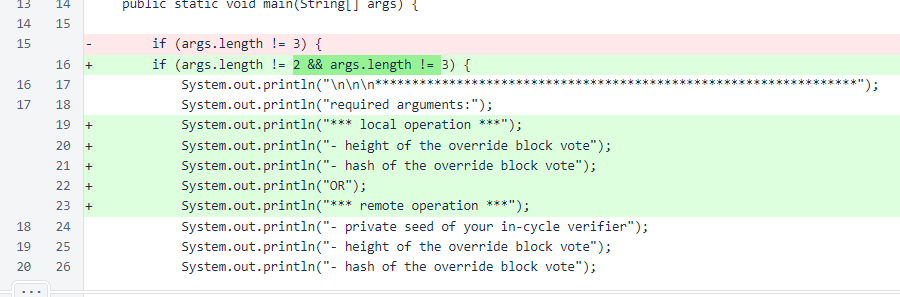
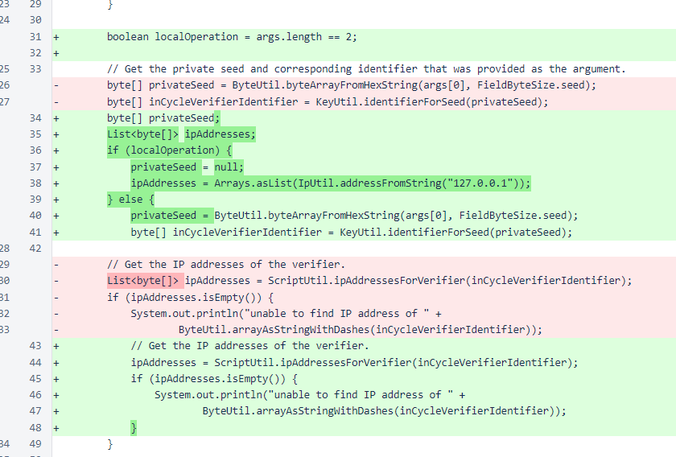
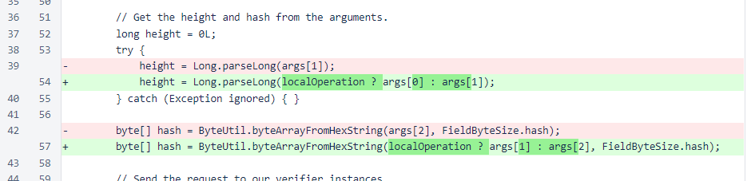
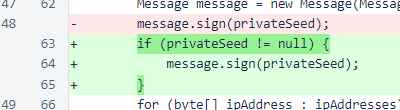

Nyzo version 533 (commit on GitHub) updates HashVoteOverrideRequestScript for easier local operation.
This version affects HashVoteOverrideRequestScript only.
The HashVoteOverrideRequestScript has been modified so that specification of a private seed is no longer required. When a private seed is not specified, the message is signed with the local verifier's private key and the message is sent to the loopback interface.
When the private seed is not provided, the process for retrieving the IP address of the verifier is bypassed.
The height and hash are offset by one position in the arguments array when the private seed is not provided.
When the private seed is not provided, the message is not signed again. By default, all messages are signed with the local verifier's private key.
